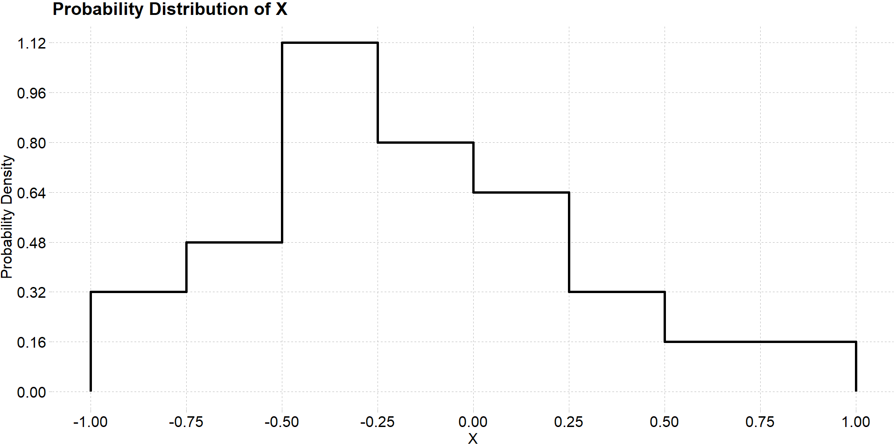
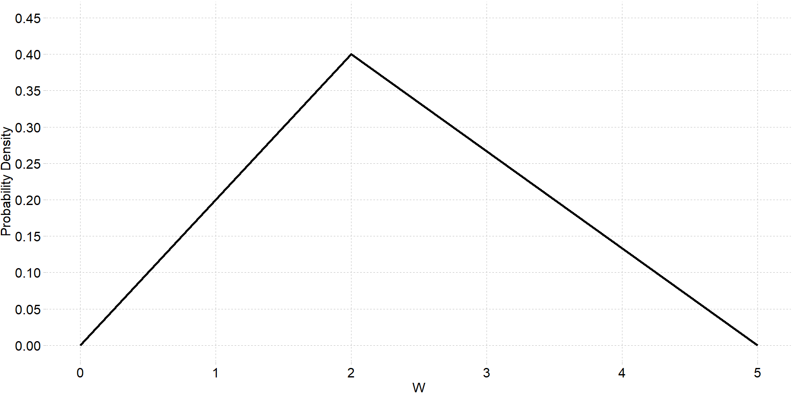

We can think of a probability distribution as a model of a particular random process. Some types of random variables are commonly encountered and thus common models of these random variables have emerged to describe their probability distributions. Below we will introduce a few of the most commonly used probability distributions for discrete random variables.
The Bernoulli distribution, named after Swiss mathematician Jacob Bernoulli, is the probability distribution of a discrete random variable with two possible outcomes \([0, 1]\) where the outcome \(X = 1\) occurs with probability \(p\) and the outcome \(X = 0\) occurs with probability \(1-p\). This random variable can be used to model any binary random process like flipping a coin, or any categorical variable with two categories such as male or female. The probability mass function - which we can think of as the function which assigns probabilities to different outcomes of random variable - is given below
\[ P(X) = \begin{cases} p & \ \text{if} \ X = 1 \\ (1-p) & \ \text{if} \ X = 0 \end{cases} \]
The Bernoulli distribution has a single parameter \(p\) which is referred to as the “probability of success” - referring to the probability that the outcome we are interested happens - such as getting Heads in a single flip of a coin. We usually denote that a random variable \(X\) follows a Bernoulli distribution mathematically as \[ X \sim Bernoulli(p) \]
In probability theory, the term expected value is often used instead of mean or average however they technically mean the same thing. The expected value of a probability distribution for a random variable \(X\) is denoted mathematically as \(E[X]\). The Bernoulli distribution has the following expected value and variance:
\[ E[X] = p \] \[ Var[X] = p(1-p)\]
where \(Var[X]\) means the variance of the random variable \(X\).
Its important to note than many types of random variables can be remodeled into a Bernoulli distribution. Take for example a random variable \(Z\) which assigns the numbers \(0\), \(1\), or \(2\), to people who have one of three categories of pets: cats, dogs, or fish, respectively. The following table gives the probability distribution of \(Z\):
| Z | Probability |
|---|---|
| 0 | \(p_1\) |
| 1 | \(p_2\) |
| 2 | \(p_3\) |
If we are interested in whether a single randomly sampled individual has a dog as a pet, then we may consider having a dog as the “successful” outcome and all other outcomes as “failures”. Then the random variable \(Y\) assigns a value of \(1\) to an individual who has a dog as a pet with probability \(p_2\) and a value of \(0\) to an individual who does not have a dog with probability \(1 - p_2 = p_1+p_3\). Thus the random variable \(Y\) follows a Bernoulli distribution:
\[ Y \sim Bernoulli(p_2) \]
The binomial distribution is probably the most widely used discrete probability model. A binomial random variable counts the number of “successful” outcomes out of \(n\) independent trials where each trial has probability of success \(p\). Like the Bernoulli random variable, the binomial distribution deals with dichotomous outcomes. In fact, a binomial random variable is a sum of \(n\) independent draws from a Bernoulli distribution. Thus the defining characteristics of a binomial distribution are
There is a basic random process with two possible outcomes denoted as “success” or “failure”
There are \(n\) independent repetitions of the random process
the probability of success \(p\) is constant all observations of the random process
Thus the number of trials \(n\) and the probability of success \(p\) are parameters of the binomial distribution. A random variable \(X\) which follows the binomial distribution is denoted mathematically as
\[ X \sim Binom(n, p) \]
Typical applications of the binomial distribution involve experimental outcomes such as the number of patients who recovered from illness while taking an experimental drug. Or the number of salmon that successfully spawn in a creek on a given day of the week.
The mean and variance of the binomial distribution are given by:
\[ E[X] = np \] \[ Var[X] = np(1-p) \]
The binomial distribution has the following probability mass function:
\[ P(X = k) = \binom nk p^k (1-p)^{n-k}\]
The first quantity is called the binomial coefficient and counts the number of ways to arrange \(k\) successes among \(n\) independent trials. Mathemtically it is defined as
\[ \binom nk = \frac{n!}{k!(n-k)!} \]
The symbol \(!\) is called a factorial. In mathematics, a factorial is the product of all positive integers less than or equal to a given positive integer and not including \(0\). \[n! = n \times (n-1) \times (n-2) \times \dots \times 1 \]
For example the quantity \(5!\) is computed as
\[ 5! = 5\times 4\times 3\times 2\times 1\]
It is also important to note that the quantity \(0! = 1\) which is admittedly not intuitive.
To explain in more detail, if we think of the \(n\) trials as a sequence of \(k\) ones (successes) and \(n-k\) zeros (failures), then the binomial coefficient is essentially enumerating and counting all possible permutations of that sequence. Consider the possible sequences of two successes in three trials: there are three possible sequences of successes and failures we could observe:
\[ (1, 1, 0) \\ (1, 0, 1) \\ (0, 1, 1)\]
Using the binomial coefficient we have
\[ \binom 32 = \frac{3!}{2! (3-2)!} = \frac{3\times 2\times 1}{2\times 1 \times 1} = 3 \]
Example: The random variable \(X\) models the number of hits in five at-bats for professional baseball player Luis Arraez of the Miami Marlins who has a hit percentage of \(79\%\). Thus \(X\) is a binomial random variable \[ X \sim Binom(n=5, p=0.79) \]
Compute the probability that Luis Arraez gets one hit in the next five at-bats
Compute the probability that Luis Arraez gets more than 4 hits in the next five at-bats
The Poisson (pronounced “\(\text{Pwa - s}\tilde o\)”) distribution is named after French Scientist Siméon Denis Poisson (1781–1840). It models the probability that a given number of events occur in a fixed interval of time, assuming the events occur independently of each other and with a known constant mean rate \(\lambda\). Thus, a Poisson random variable has the following characteristics:
The occurrence of one event does not affect the probability that a second event will occur. That is, events occur independently.
The rate at which events occur is constant. The rate cannot be higher in some intervals and lower in other intervals.
Two events cannot occur at exactly the same instant; instead, at each very small sub-interval exactly one event either occurs or does not occur.
the events occur at rate \(\lambda\) - also called the rate parameter - and is striclty positive \(\lambda \in (0,1)\).
The probability mass function is given by
\[ P(X = k) = \frac{\lambda^k e^{-\lambda}}{k!}\]
where \(k\) is the number of events occurring, \(\lambda\) is the rate at which events occur. The quantity \(e\) is called Euhlers number. It is a numerical constant that arises often in mathematics and can be characterized in many different ways. One definition occurs as the limit point of the sequence \((1+1/n)^n\):
\[e = \lim_{n\rightarrow \infty} \left( 1+\frac{1}{n} \right)^n \approx 2.7183 \]
virtually all calculators will have a natural exponentiation button for this quantitiy which is defined as
\[ e = \exp(1) \]
The expected value and variance of a Poisson random variable are both given by the rate parameter \(\lambda\)
\[ E[X] = \lambda\] \[ Var[X] = \lambda\]
The Poisson distribution has a wide range of applications across scientific disciplines including finance, genetics, infectious disease, manufacturing and many more. Some examples of the poisson random variables are given below:
The number of mutations on a strand of DNA occurring in a given unit of time
The number of defective products produced per hour of assembly at a factory
The number of bankruptcies filed in a given month
The number of internet connection failures in a given month
Example: Let the random variable \(Y\) represent the number of phone calls placed to a call center each hour during peak customer service hours. Assume that calls typically occur at a rate of \(10\) calls per hour.
What is the probability that the call center receives \(8\) calls in the next hour?
What is the probability that the call center receives fewer than \(2\) calls in the next hour?
Recall that continuous random variables have an uncountable number of outcomes. As a result finding probabilities for continuous random variables requires a heavier mathematical treatment. For continuous random variables, the function which assigns probabilities to different outcomes is called a probability density function.
Since we cannot simply list the possible values of a continuous random variable and their probabilities, we have to rely on graphically displaying their distributions as we have done before. Consider the random variable \(X\) with probability density function \(f(x)\) given below

For a continuous distribution we cannot compute the probability that \(X\) is equal to some particular value because \(X\) can take on infinite number of values within a range. Thus the probability density is divided among an infinite number of outcomes making the probability of any one outcome effectively zero. We can however consider the probability of that \(X\) takes on a value in some sub-interval of its domain. For example, we can compute the probability \(P(X<0)\). Finding this probability amounts to finding the area underneath the probability density curve of \(X\) in the interval \([-1, 0)\).
Normally, the mathematics of calculus would be required to compute this probability and we would need to integrate \(f(x)\) over this range of values. However, in the example above we can manually extrapolate the area under the curve. Notice that the area of the curve is divided into a grid. By finding the area of a single box in the graph, we can multiplying this area by the number of boxes in previously specified range to compute the total area under the curve. For example, the area of a single box is
\[ \text{Area} = 0.25 \times 0.16 = 0.04\]
Now that we know the area of a single box on the plot
\[P(X < 0) = 0.04*17 = 0.68 \]
Lets consider another example: Below is the probability density function for a random variable \(W\)

\[\text{area of triange} = \frac{1}{2}(b \times h) \]
where \(b\) is the base length and \(h\) is the height of the trangle.
\[ P(W\leq 1) = \frac{1}{2}(1\times 0.2) = 0.1 \]
We can also talk about the normal distribution as a family of probability distributions. As before, the normal distribution has two parameters \(\mu\) - the location parameter, and \(\sigma\) the “spread” parameter. The normal distribution has the following probability density function
\[ f(x) = \frac{1}{\sigma \sqrt{2\pi}} \cdot e^{\frac{-(x-\mu)^2}{2\sigma^2}} \]
Finding probability from the normal distribution is not as straight forward as the examples we did earlier. we cannot easily extrapolate probabilities from the graph of a normal distribution. While we may use the empirical rule to identify the approximate quantiles of normal distribution, finding exact probabilities would require us to use calculus as we have said before. For example, suppose \(X\) is normally distributed with mean \(\mu\) and standard deviation \(\sigma\). To find the probability \(P(a\leq X\leq b)\) we would need to compute:
\[ P(a\leq X\leq b) = \int_{a}^{b} \frac{1}{\sigma \sqrt{2\pi}} \cdot e^{\frac{-(x-\mu)^2}{2\sigma^2}} \]
However, these skills are outside the purveiw of this course. Luckily, the normal distribution is used so frequently in statistics that precomputed tables of probabilities are usually available. These tables are often referred to as \(Z\) tables because they are based on the standard normal distribtion. In addition, because the normal distribution is symmetric, we usually only need to compute the probabilities for either the positive or negative half of the distribution. Here is an example of a \(Z\)-table
| Z | .00 | .01 | .02 | .03 | .04 | .05 | .06 | .07 | .08 | .09 |
|---|---|---|---|---|---|---|---|---|---|---|
| 0.0 | 0.500 | 0.496 | 0.492 | 0.488 | 0.484 | 0.480 | 0.476 | 0.472 | 0.468 | 0.464 |
| 0.1 | 0.540 | 0.536 | 0.532 | 0.528 | 0.524 | 0.520 | 0.516 | 0.512 | 0.508 | 0.504 |
| 0.2 | 0.579 | 0.575 | 0.571 | 0.567 | 0.564 | 0.560 | 0.556 | 0.552 | 0.548 | 0.544 |
| 0.3 | 0.618 | 0.614 | 0.610 | 0.606 | 0.603 | 0.599 | 0.595 | 0.591 | 0.587 | 0.583 |
| 0.4 | 0.655 | 0.652 | 0.648 | 0.644 | 0.641 | 0.637 | 0.633 | 0.629 | 0.626 | 0.622 |
| 0.5 | 0.691 | 0.688 | 0.684 | 0.681 | 0.677 | 0.674 | 0.670 | 0.666 | 0.663 | 0.659 |
| 0.6 | 0.726 | 0.722 | 0.719 | 0.716 | 0.712 | 0.709 | 0.705 | 0.702 | 0.698 | 0.695 |
| 0.7 | 0.758 | 0.755 | 0.752 | 0.749 | 0.745 | 0.742 | 0.739 | 0.736 | 0.732 | 0.729 |
| 0.8 | 0.788 | 0.785 | 0.782 | 0.779 | 0.776 | 0.773 | 0.770 | 0.767 | 0.764 | 0.761 |
| 0.9 | 0.816 | 0.813 | 0.811 | 0.808 | 0.805 | 0.802 | 0.800 | 0.797 | 0.794 | 0.791 |
| 1.0 | 0.841 | 0.839 | 0.836 | 0.834 | 0.831 | 0.829 | 0.826 | 0.824 | 0.821 | 0.819 |
| 1.1 | 0.864 | 0.862 | 0.860 | 0.858 | 0.855 | 0.853 | 0.851 | 0.848 | 0.846 | 0.844 |
| 1.2 | 0.885 | 0.883 | 0.881 | 0.879 | 0.877 | 0.875 | 0.873 | 0.871 | 0.869 | 0.867 |
| 1.3 | 0.903 | 0.901 | 0.900 | 0.898 | 0.896 | 0.894 | 0.893 | 0.891 | 0.889 | 0.887 |
| 1.4 | 0.919 | 0.918 | 0.916 | 0.915 | 0.913 | 0.911 | 0.910 | 0.908 | 0.907 | 0.905 |
| 1.5 | 0.933 | 0.932 | 0.931 | 0.929 | 0.928 | 0.926 | 0.925 | 0.924 | 0.922 | 0.921 |
| 1.6 | 0.945 | 0.944 | 0.943 | 0.942 | 0.941 | 0.939 | 0.938 | 0.937 | 0.936 | 0.934 |
| 1.7 | 0.955 | 0.954 | 0.954 | 0.953 | 0.952 | 0.951 | 0.949 | 0.948 | 0.947 | 0.946 |
| 1.8 | 0.964 | 0.963 | 0.962 | 0.962 | 0.961 | 0.960 | 0.959 | 0.958 | 0.957 | 0.956 |
| 1.9 | 0.971 | 0.971 | 0.970 | 0.969 | 0.969 | 0.968 | 0.967 | 0.966 | 0.966 | 0.965 |
| 2.0 | 0.977 | 0.977 | 0.976 | 0.976 | 0.975 | 0.974 | 0.974 | 0.973 | 0.973 | 0.972 |
| 2.1 | 0.982 | 0.982 | 0.981 | 0.981 | 0.980 | 0.980 | 0.979 | 0.979 | 0.978 | 0.978 |
| 2.2 | 0.986 | 0.986 | 0.985 | 0.985 | 0.985 | 0.984 | 0.984 | 0.983 | 0.983 | 0.983 |
| 2.3 | 0.989 | 0.989 | 0.989 | 0.988 | 0.988 | 0.988 | 0.987 | 0.987 | 0.987 | 0.986 |
| 2.4 | 0.992 | 0.992 | 0.991 | 0.991 | 0.991 | 0.991 | 0.990 | 0.990 | 0.990 | 0.990 |
| 2.5 | 0.994 | 0.994 | 0.993 | 0.993 | 0.993 | 0.993 | 0.993 | 0.992 | 0.992 | 0.992 |
| 2.6 | 0.995 | 0.995 | 0.995 | 0.995 | 0.995 | 0.995 | 0.994 | 0.994 | 0.994 | 0.994 |
| 2.7 | 0.997 | 0.996 | 0.996 | 0.996 | 0.996 | 0.996 | 0.996 | 0.996 | 0.996 | 0.995 |
| 2.8 | 0.997 | 0.997 | 0.997 | 0.997 | 0.997 | 0.997 | 0.997 | 0.997 | 0.997 | 0.997 |
| 2.9 | 0.998 | 0.998 | 0.998 | 0.998 | 0.998 | 0.998 | 0.998 | 0.998 | 0.998 | 0.998 |
| 3.0 | 0.999 | 0.999 | 0.999 | 0.999 | 0.998 | 0.998 | 0.998 | 0.998 | 0.998 | 0.998 |
| 3.1 | 0.999 | 0.999 | 0.999 | 0.999 | 0.999 | 0.999 | 0.999 | 0.999 | 0.999 | 0.999 |
| 3.2 | 0.999 | 0.999 | 0.999 | 0.999 | 0.999 | 0.999 | 0.999 | 0.999 | 0.999 | 0.999 |
| 3.3 | 1.000 | 0.999 | 0.999 | 0.999 | 0.999 | 0.999 | 0.999 | 0.999 | 0.999 | 0.999 |
| 3.4 | 1.000 | 1.000 | 1.000 | 1.000 | 1.000 | 1.000 | 1.000 | 1.000 | 1.000 | 1.000 |
| 3.5 | 1.000 | 1.000 | 1.000 | 1.000 | 1.000 | 1.000 | 1.000 | 1.000 | 1.000 | 1.000 |
| 3.6 | 1.000 | 1.000 | 1.000 | 1.000 | 1.000 | 1.000 | 1.000 | 1.000 | 1.000 | 1.000 |
| 3.7 | 1.000 | 1.000 | 1.000 | 1.000 | 1.000 | 1.000 | 1.000 | 1.000 | 1.000 | 1.000 |
| 3.8 | 1.000 | 1.000 | 1.000 | 1.000 | 1.000 | 1.000 | 1.000 | 1.000 | 1.000 | 1.000 |
| 3.9 | 1.000 | 1.000 | 1.000 | 1.000 | 1.000 | 1.000 | 1.000 | 1.000 | 1.000 | 1.000 |
The left-most column gives the \(Z\)-score and the columns to right of this column are for additional decimal places of the \(Z\)-score. The values in the table represent \(P(Z\leq z)\) and denote the area to left of the \(Z\)-score.
We can compute the \(Z\) for any normal random variable and use the table above to find it’s probability.
Try it out: Suppose \(X\sim N(5, 10)\). Compute the probability that \(X\geq 25\)
Try it out: Suppose \(X\sim N(-2, 4)\). Compute the probability that \(-3 \leq X \leq 1\)